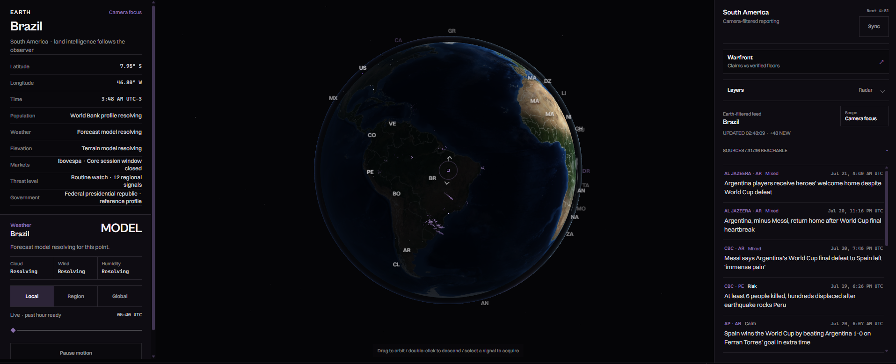

These are the two projects I work on most: a personal project, and this
portfolio website I'm building through my course assignments.
World
Personal 3D globe project
Outside of class I've been building a web app for myself. The part I can
show is called World: a 3D globe you can rotate, zoom, and click. When
you move to a new place, the page updates with information about that
area.
It can show:
Place, coordinates, and local time
Weather and rain movement
Population information
Local news and politics
Regional risks and conflicts
Nearby stock markets

World focused on Brazil: the globe in the middle, place details on
the left, and regional news on the right.
I built the globe with JavaScript and Three.js. A Python and Flask server
collects data from Open-Meteo, the World Bank, RainViewer, and other
public sources.
None of this came from a class. I pieced it together from YouTube
tutorials, Reddit threads, and developers I follow on Twitter, plus a lot
of trial and error.
The hardest part is keeping everything matched to the same location. Some
sources are slow or do not answer at all. When that happens, the page
says the data is loading or unavailable instead of guessing.
Developer Portfolio
Web design course project
This is the website you are viewing now. It has five pages, one shared
stylesheet, and a small JavaScript file for the contact form.
The site includes:
Keyboard-friendly navigation
A responsive skills table
A validated contact form
Audio and video with transcripts
A printable resume
I built it with HTML, CSS, and vanilla JavaScript. I also use Git and
GitHub Pages to track and publish my work.
This project taught me to get the page structure right before worrying
about how it looks. It also helped me improve at responsive design,
accessibility, and keeping my Git commits organized.
Video walkthrough
A 56-second silent screen recording that walks through each page of
this site: the home page, this projects page, the skills table, the
resume, and the contact form.